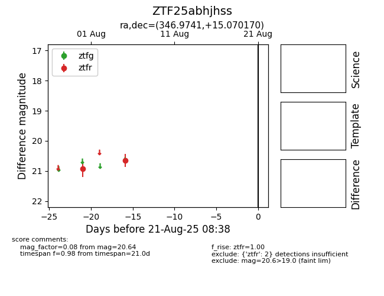

Target ZTF25abhjhss at 2025-08-21 08:38, see:
FINK: fink-portal.org/ZTF25abhjhss
Lasair: lasair-ztf.lsst.ac.uk/objects/ZTF25abhjhss
ALeRCE: alerce.online/object/ZTF25abhjhss
alt names
ZTF25abhjhss (ztf,alerce)
coordinates:
equatorial (ra, dec) = (346.9741,+15.07017)
galactic (l, b) = (89.0396,-40.88941)
photometry
last ztfr=20.64
2 ztfr detections
